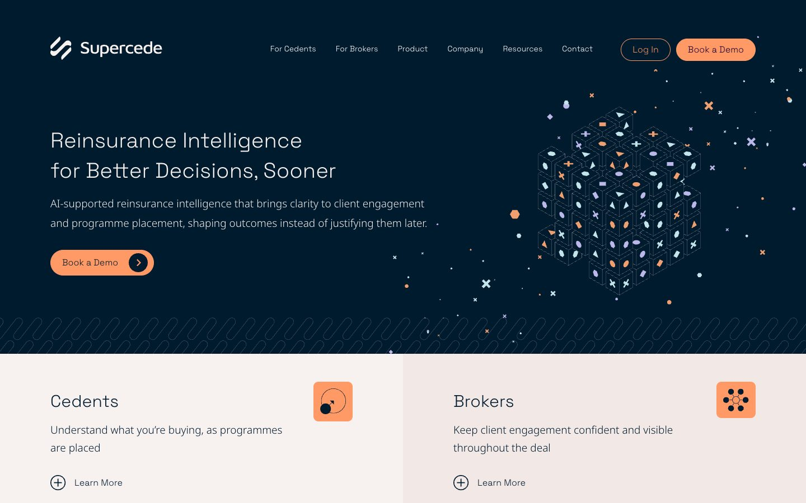

The brief
Fill webinar seats with the right people and bring in demo requests from insurers and brokers.
- A specialist audience in a niche market
- Two kinds of buyer, each needing its own message
- Results that could be measured from ad to sign up
Case study · Supercede
Supercede makes software for the reinsurance market, helping insurers and brokers see a reinsurance programme clearly while it is being placed. Its buyers are a small group of specialists, so we ran its LinkedIn advertising: webinar sign ups and an always on demo campaign.

Fill webinar seats with the right people and bring in demo requests from insurers and brokers.
We ran LinkedIn as a channel in 2026: planning, building, launching and reporting on each campaign.
What we built
We started by looking at what had run before, so every new campaign had something to beat.
Targeting built around the specialist roles that buy, in the markets Supercede sells to, so spend stayed on the right people.
Separate pushes for insurers and for brokers, each with its own audience, message and sign up route.
A steady campaign introducing the product to insurers between webinars and sending them to book a demo.
LinkedIn’s conversion tracking set up on the website, so sign ups show where the ads are managed.
Regular updates while campaigns ran and a review at the end of each push, with what to change next time.
Where it is now
The tracking, audiences and demo campaign are in place for Supercede’s next webinar or launch.
Selling to a niche?
Book a consultation and tell us who you need to reach.
Book a consultation Back to all work